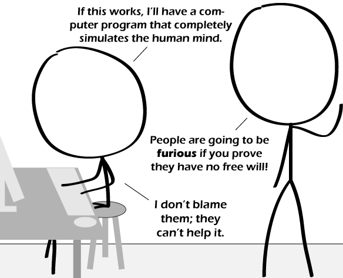

Comic JK 668
When I Feel Like It
⇤
<
?
>
⇥

⇤
<
?
>
⇥
Forum
.
RSS
.
Digg
.
Facebook
.
Reddit
.
Twitter
.
Stumbleupon
Enter your thoughts on number 668 here. Please, no spamming, trolling, phreaking, or simulated simulations of butcher ponies. Your mother rationally and deterministically chooses dorky college boys every time. The BRONIE was here. >as was another! *da dum, tish* *ba dum, tsss* >*obumbrata et velata, michi quoque niteris* >>*klaatu barada nikto* replace turtles all the way down with, simulations all the way through WOOOOOOOOOOOOOO!O? -5 points for left-hand-mouse! >-5,000 points for not realizing that some people are left-handed... >>-50,000 points for not realising that most left-handed people move the mouse with the right hand, leaving the more complex movements of pressing shortcut keys for their trained left hand.. >>>-500,000 points for attempting to deduct 50,000 points - "most" =/= "all" ( "anecdote =/= data", but among people I know who are left-handed, about a third have the mouse on the left; additionally, I've met two right-handed people who insist on having the mouse on the left... ) >>>>I'm another one :) >>>>I for one are right-handed and always have my mouse on the left ^^^^^^Please stay where you are. The grammar nazis are on their way to your location to send you to a concentration camp for reeducation. >>>>>>>erm... the O.E.D. says "re-education"; it specifies prefix with hyphen... >>>>> I am right handed and have the mouse on the right side, but the buttons are the other way (so I left click instead of right click). >>>>>>>>>Right handed person with left handed mouse... makes it easier to click through the web with one hand and use my "good" hand for, uh, other activities... >>>Welcome one hand surfers! >>>>-5,000,000 because I feel like it >>>>>-(3+4i) because... well, it's complex... >>>>>Too bad we're in the game where the points mean nothing >>>>>> "Whose Line Is It Anyway- The Show Where Everything is Made Up and The Points Don't Matter" Thanks... now I have to watch it :P >>>>>>Great, now I've lost The Game. Thanks. >>>>>> "-(3+4i) points" is now a meme. No argument. >>>>>>>is it ? did I just start a meme ? hopefully it's one that involves complex numbers becoming more widely understood, rather than the mere pasting of the general form in some unusual locations... come to think of it, a meme involving more widespread understanding of basic arithmetic would be a start... ( just to clarify, that was a general moan, and not aimed at anyone commenting here... ) > The mouse is on the right, just like everyone is always standing on the ceiling .. do you see upside down or something? WHY ARE THE HEADS SOOOO BIIIIIG??? >That's what she said >cuz they're so smart >> that's what she said, right before she left you WOOOOOOOOOOOOOO! W I N N I N G